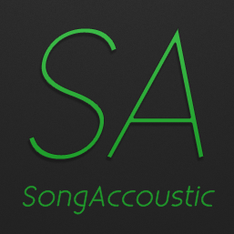
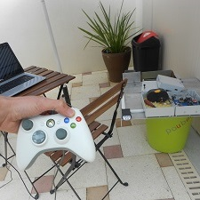

Qui suis-je ?
Je suis David Guyon, un étudiant Français passionné d'informatique, de musique et qui apprécie prendre des cafés avec ses amis. Je viens de passer un an à l'université de Napier à Edimbourg en licence informatique. J'ai vraiment apprécié ce que j'étudiais et c'est pourquoi je passe une grande partie de mon temps libre à programmer sur ma Raspberry Pi, des périphériques sous Android ainsi que des projets Web. Lis en plus
Mes compositions

Mon Blog

Mes Projets
Clique pour voir l'ensemble des projets que j'ai fait ainsi que ceux sur lesquels je travaille actuellement

Projet de bateau
Sur mon temps libre et uniquement quand il fait beau, je m'installe au soleil avec mon bateau et je l'améliore. C'est un bateau en PVC d'environ 1m². Une Raspberry Pi et un ATMega lui donne la vie et une application Android contrôle ses faits et gêstes.
Articles à propos de ce projet (bientôt)

Projet SongAccoustic
Depuis maintenant X années, un ami et moi-même travaillons sur ce site internet qui présente mes compositions musicales. Dès son commencement, nous avons fait le choix d'utiliser des technologies modernes. Ce site utilise des balises HTML5, du CSS3 ainsi que du JS. Son côté serveur tourne avec du PHP ainsi qu'une base de données SQL.
Articles à propos de ce projet (bientôt)